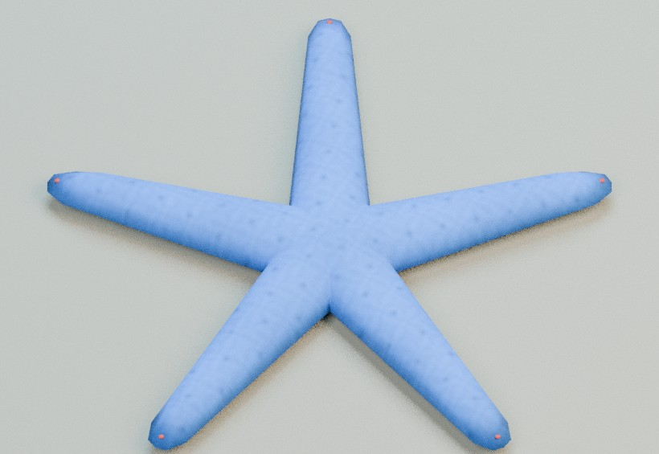
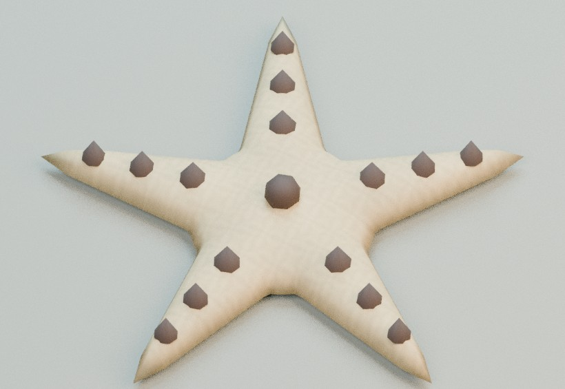
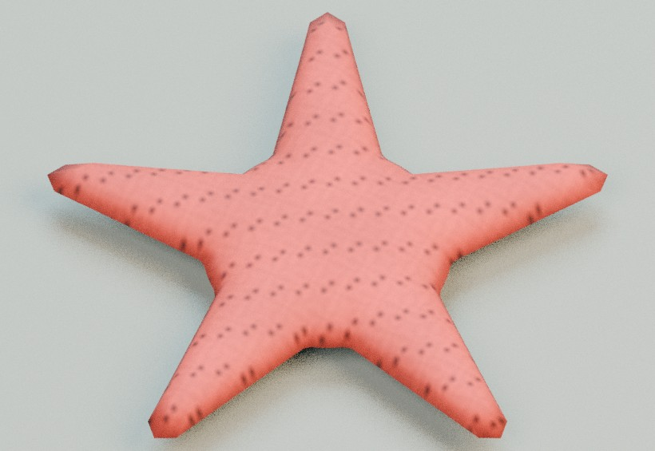
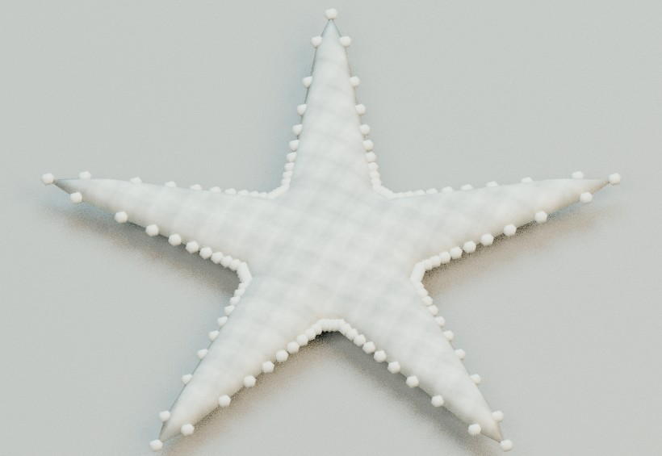
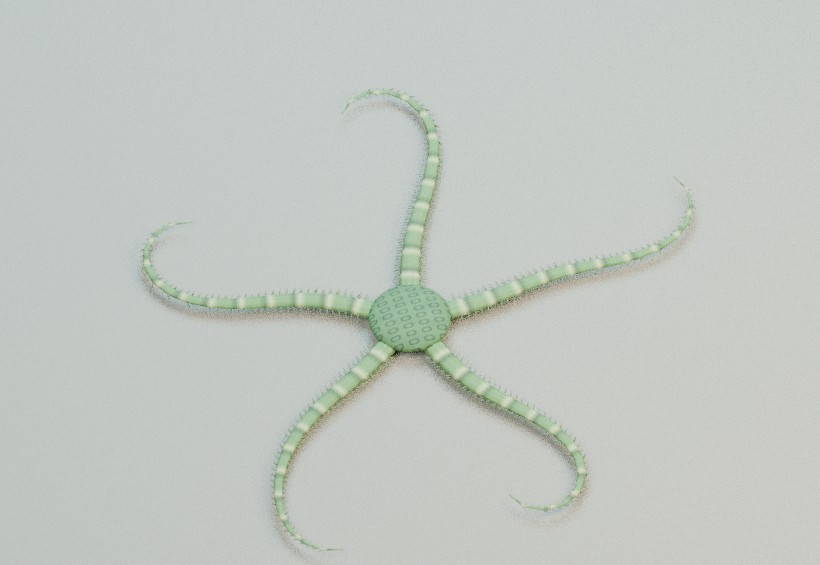
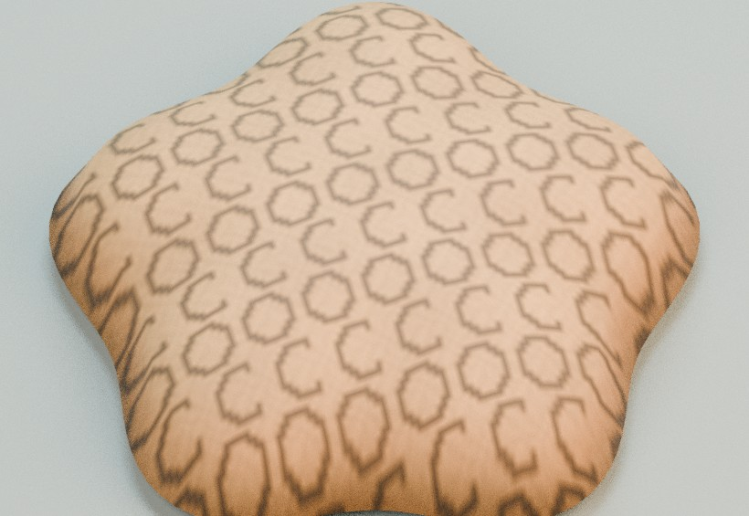

SIX ANIMALS · TUBE FEET · SAND AND GLASS
Sea stars
A slow crawl on adhesive feet, with no front and no back.

Blue sea star
Linckia laevigata · 18 cmThe one you steer. Eyes at the arm tips; any arm can lead. [3] Crawls 8.1 cm a minute. [2]

Chocolate-chip star
Protoreaster nodosus · 20 cmThick arms, dark knobs. Crawls 18.8 cm a minute. [2] Rests 20 to 60 s between walks.

Red Fromia
Fromia milleporella · 8 cmRed with fine dark pores; colour varies in the wild. [8] Creeps along the three rocks.

Sand-sifting star
Archaster typicus · 11.2 cmFlat grey-tan star that buries in sand. [4] Fastest of the three measured crawlers: 45.8 cm a minute. [2]

Green brittle star
Ophiarachna incrassata · 3.8 cm discRows on 15 cm S-bent arms. [5,6] Hides under the ledges.

Cushion star
Culcita novaeguineae · 14.4 cmA thick pentagon with short arms and patchy colours; barely moves. [7]
01 · Attach, pull, let go
Tube feet stick by secretion and let go by de-adhesion; the footprint stays. [1]
The four beats are an animation. Speeds are multiplied by 30, 20 and 20 so the stars are watchable.
02 · Eyes at the tips of the arms
Compound eyes at the arm tips let it steer across the reef by sight. [3]
The raised tip follows that anatomy; the two-second reach on button A is an animation.
03 · Disappearing into sand
Sand-sifting stars bury themselves in sand and move between habitats. [4]
A nearby player makes one dive. When it dives and how fast are authored, not measured.
04 · Brittle stars row
Arms coordinate, the leading arm changes [5], and the tips bend upward. [6]
3.8 cm disc, 15 cm arms with 16 joints each, about 34 cm across. The escape speed is a readability choice.
05 · The tank, and the lap that walks it
Reef flats and rubble are cushion-star ground. [7] Our tank borrows that: an open sand flat, three rocks and tufts of ribbon seagrass, 9 to 18 cm tall. [9]
Game design: press into the glass and your underside meets it, on five planes. Let go and an autopilot walks this lap. Its Forth:
st-auto-step st@ 0 = if
JOYSTICK_BUTTON_DOWN st-buttons st!
st-surface st@ 1 = if 1 st-auto-step st! then
else st-auto-step st@ 1 = if
JOYSTICK_BUTTON_UP st-buttons st!
st-z st@ 3 >= if 2 st-auto-step st! then
else ( ... right, back, down, rest ... ) then then